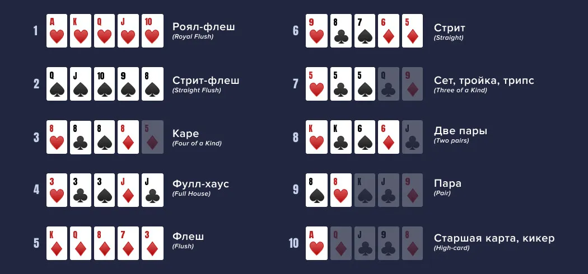

Техасский холдем (или просто холдем) —
разновидность покера, где каждому игроку раздают две закрытые карты
(«карманные»). На стол выкладывают ещё пять общих карт, которыми могут
пользоваться все игроки
Цель — составить лучшую покерную комбинацию
из пяти карт, используя свои карты и общие карты
↓ комбинации покера ↓

При столкновении двух комбинаций выигрывает та, которая стоит выше в этом списке
Если лучшие комбинации у двух игроков совпадают, банк делится поровну между ними (сплит-пот)
ход игры
1. Префлоп — первый раунд торговли, игроки по очереди делают ходы, начиная с того, кто сидит слева от большого блайнда. Варианты действий: сбросить карты (фолд), уравнять ставку (колл), повысить ставку (рейз)
2. Флоп — на стол выкладывают три открытые карты, начинается второй раунд торговли
3. Тёрн — открывается четвёртая общая карта, следует третий раунд торговли
4. Ривер — на стол кладут пятую, последнюю общую карту, начинается финальный раунд торговли
5. Шоудаун — если после всех ставок в игре остаются 2 и более игроков, они вскрывают карты. Побеждает игрок с лучшими 5 картами, собранными из 7 возможных: 2 свои + 5 общих